Bài tập — Bài 1 — Đại cương về dao động điều hòa
Phần A — Trắc nghiệm 4 lựa chọn
Bài 1 — Mức 1 — Nhận biết
Một vật dao động điều hòa theo phương trình \(x=6\cos(4\pi t-\pi/3)\) cm. Biên độ và tần số của dao động là
A. \(6\) cm và \(2\) Hz.
B. \(4\) cm và \(6\) Hz.
C. \(6\) cm và \(4\) Hz.
D. \(3\) cm và \(2\) Hz.
Đáp án và lời giải
Chọn A. So sánh với \(x=A\cos(\omega t+\varphi)\): \(A=6\) cm, \(\omega=4\pi\) rad/s nên \(f=\omega/(2\pi)=2\) Hz.
Bài 2 — Mức 1 — Nhận biết
Một dao động có chu kì \(T=0,25\) s. Tần số góc bằng
A. \(2\pi\) rad/s.
B. \(4\pi\) rad/s.
C. \(8\pi\) rad/s.
D. \(16\pi\) rad/s.
Đáp án và lời giải
Chọn C. \(\omega=2\pi/T=2\pi/0,25=8\pi\) rad/s.
Bài 3 — Mức 1 — Nhận biết
Một vật dao động điều hòa có biên độ \(A=5\) cm. Chiều dài quỹ đạo là
A. \(2,5\) cm.
B. \(5\) cm.
C. \(10\) cm.
D. \(20\) cm.
Đáp án và lời giải
Chọn C. Vật chuyển động giữa hai biên \(-A\) và \(+A\), vì vậy chiều dài quỹ đạo là \(2A=10\) cm.
Bài 4 — Mức 1 — Nhận biết
Phát biểu nào đúng?
A. Mọi dao động tuần hoàn đều là dao động điều hòa.
B. Dao động điều hòa là dao động có li độ biến thiên theo hàm sin hoặc cos của thời gian.
C. Biên độ dao động điều hòa có thể âm.
D. Tần số góc có đơn vị héc.
Đáp án và lời giải
Chọn B. Dao động điều hòa là trường hợp đặc biệt của dao động tuần hoàn; biên độ được quy ước dương và tần số góc có đơn vị rad/s.
Phần B — Đúng/Sai
Bài 5 — Mức 2 — Thông hiểu
Xét dao động \(x=8\cos(5t+\pi/6)\) cm. Đánh dấu Đúng/Sai:
a) Biên độ bằng \(8\) cm.
b) Chu kì bằng \(2\pi/5\) s.
c) Tần số bằng \(5\) Hz.
d) Pha ban đầu bằng \(\pi/6\) rad.
Đáp án và lời giải
a) Đúng. \(A=8\) cm. b) Đúng. \(T=2\pi/\omega=2\pi/5\) s. c) Sai. \(f=\omega/(2\pi)=5/(2\pi)\) Hz. d) Đúng. \(\varphi=\pi/6\) rad.
Bài 6 — Mức 2 — Thông hiểu
Một vật dao động điều hòa có phương trình \(x=A\cos(\omega t+\varphi)\) với \(A>0\), \(\omega>0\). Xét các phát biểu:
a) \(x\) luôn nằm trong đoạn \([-A,A]\).
b) Sau mỗi khoảng thời gian \(T\), trạng thái dao động lặp lại.
c) Hệ số của \(t\) trong pha chính là tần số \(f\).
d) Nếu đổi \(A\) thành \(-A\) mà giữ nguyên pha thì vẫn đang viết ở dạng chuẩn.
Đáp án và lời giải
a) Đúng. b) Đúng. c) Sai. Hệ số của \(t\) là \(\omega\), không phải \(f\). d) Sai. Dạng chuẩn lấy \(A>0\); nếu gặp biên độ âm phải chuyển dấu vào pha.
Phần C — Trả lời ngắn
Bài 7 — Mức 3 — Vận dụng
Một vật thực hiện \(45\) dao động toàn phần trong \(18\) s. Tính chu kì, tần số và tần số góc.
Đáp án và lời giải
Ta có \(f=N/\Delta t=45/18=2,5\) Hz. Do đó \(T=1/f=0,4\) s và \(\omega=2\pi f=5\pi\) rad/s.
Bài 8 — Mức 3 — Vận dụng
Vật dao động theo \(x=10\cos(2\pi t+\pi/3)\) cm. Tính pha dao động và li độ tại \(t=1/6\) s.
Đáp án và lời giải
Pha tại \(t=1/6\) s:
\(\Phi=2\pi\cdot\frac16+\frac\pi3=\frac{2\pi}{3}\).
Suy ra \(x=10\cos(2\pi/3)=-5\) cm.
Bài 9 — Mức 3 — Vận dụng
Một vật dao động điều hòa có \(f=4\) Hz và quỹ đạo dài \(16\) cm. Viết các giá trị \(A\), \(T\) và \(\omega\).
Đáp án và lời giải
Quỹ đạo dài \(2A=16\) cm nên \(A=8\) cm. \(T=1/f=0,25\) s và \(\omega=2\pi f=8\pi\) rad/s.
Phần D — Vận dụng và vận dụng cao
Bài 10 — Mức 4 — Vận dụng cao
Một vật dao động điều hòa. Tại \(t=0\) vật ở vị trí \(x=A/2\) và đang chuyển động theo chiều âm. Biết chu kì \(T=0,8\) s, biên độ \(A=6\) cm. Viết phương trình dao động dạng cos.
Đáp án và lời giải
Chọn dạng chuẩn: \(x=A\cos(\omega t+\varphi)\).
\(\omega=2\pi/T=2,5\pi\) rad/s. Tại \(t=0\):
\(\cos\varphi=x_0/A=1/2\).
Vì vật chuyển động theo chiều âm nên \(v_0=-A\omega\sin\varphi<0\), tức \(\sin\varphi>0\). Do đó chọn \(\varphi=\pi/3\).
Vậy
\(x=6\cos\left(2,5\pi t+\frac{\pi}{3}\right)\text{ cm}.\)
Kiểm tra: tại \(t=0\), \(x=3\) cm và \(v<0\), đúng với đề.
Ngân hàng bài tập mở rộng
Nhận biết — Trả lời ngắn
Bài 11
Một chất điểm dao động điều hòa trên trục \(Ox\). Đồ thị li độ – thời gian \((x-t)\) của vật được cho như hình dưới. Độ dịch chuyển của vật từ \(t=0\) đến \(t=0{,}125\) s là bao nhiêu xentimét? Lấy 3 chữ số có nghĩa.
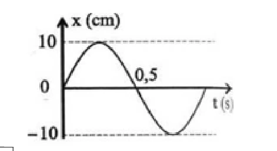
Đáp án và lời giải
Đáp án: \(7{,}07\) cm. Hướng dẫn giải:
Từ đồ thị đọc được biên độ \(A=5\sqrt2\) cm. Ở \(t=0\), vật ở vị trí cân bằng nên \(x_1=0\); tại \(t=0{,}125\) s, vật ở biên dương nên \(x_2=5\sqrt2\) cm.
\(\Delta x=x_2-x_1=5\sqrt2-0\approx7{,}07\ \text{cm}.\)
Bài 12
Một vật dao động điều hòa dọc theo trục \(Ox\). Đồ thị li độ – thời gian của vật được cho như hình dưới. Lấy \(g=\pi^2\approx10\ \text{m/s}^2\). Chu kì dao động của vật bằng bao nhiêu giây?
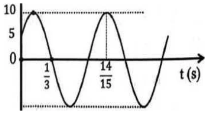
Đáp án và lời giải
Đáp án: \(0{,}8\) s. Hướng dẫn giải:
Từ đồ thị, tại \(t_1=\dfrac13\) s vật qua vị trí cân bằng theo chiều âm; tại \(t_2=\dfrac{14}{15}\) s vật ở biên dương. Khoảng thời gian giữa hai trạng thái này bằng \(\dfrac{3T}{4}\):
\(\Delta t=\frac{14}{15}-\frac13=0{,}6\ \text{s}=\frac{3T}{4}.\)
Suy ra
\(T=0{,}8\ \text{s}.\)
Lưu ý: \(0{,}6\) s là khoảng thời gian \(\Delta t\) giữa hai trạng thái đã cho, không phải chu kì \(T\).
Bài 13
Hình dưới là đồ thị của một vật dao động điều hòa có chu kì \(T=1{,}2\) s. Giá trị của \(t_0\) trên đồ thị là bao nhiêu giây?
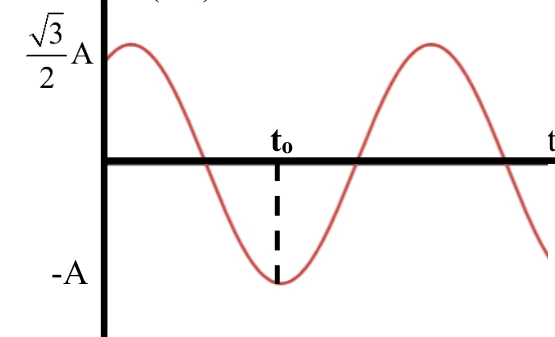
Đáp án và lời giải
Đáp án: \(0{,}7\) s. Hướng dẫn giải:
Tại \(t=0\), đồ thị có \(x=\dfrac{\sqrt3}{2}A\) và đang đi lên. Vật cần \(T/12\) để tới biên dương, rồi thêm \(T/2\) để tới biên âm. Với \(T=1{,}2\) s:
\(t_0=\frac{T}{12}+\frac{T}{2}=\frac{7T}{12}=0{,}7\ \text{s}.\)
Bài 14
Một vật dao động theo phương trình
Kể từ \(t=0\), thời điểm vật cách vị trí cân bằng \(9\) cm và đang lại gần vị trí cân bằng lần thứ \(2021\) là bao nhiêu giây? Chỉ lấy phần nguyên của kết quả.
Đáp án và lời giải
Đáp án: \(4041\) s. Hướng dẫn giải:
Biên độ \(A=6\sqrt3\) cm, nên điều kiện \(|x|=9\) cm tương đương
Trong mỗi chu kì có hai lần vật ở khoảng cách này và đang chuyển động về vị trí cân bằng. Ta có
Sau \(1010\) chu kì đã có \(2020\) lần thỏa điều kiện. Với \(\omega=\pi/2\) rad/s thì \(T=4\) s. Từ trạng thái ban đầu đến lần thỏa điều kiện kế tiếp cần thêm \(T/4=1\) s. Do đó
Bài 15
Cho đồ thị li độ theo thời gian của một vật dao động điều hòa như hình dưới. Tính chu kì dao động của vật theo đơn vị giây.
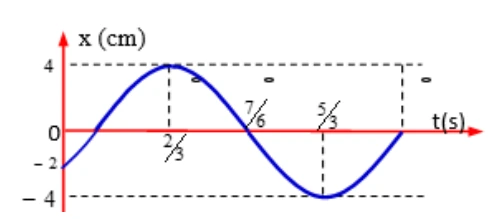
Đáp án và lời giải
Đáp án: \(2\) s. Hướng dẫn giải:
Trên đồ thị, cực đại ở \(t=\dfrac23\) s và cực tiểu kế tiếp ở \(t=\dfrac53\) s. Hai trạng thái này cách nhau nửa chu kì:
\(\frac{T}{2}=\frac53-\frac23=1\ \text{s}\Rightarrow T=2\ \text{s}.\)
Bài 16
Một vật dao động điều hòa với phương trình
Xác định li độ của vật tại \(t=2\) s. Kết quả tính bằng xentimét và làm tròn đến hai chữ số thập phân.
Đáp án và lời giải
Đáp án: \(1{,}73\) cm. Hướng dẫn giải:
Thay \(t=2\) s vào phương trình:
\(x=2\cos\left(4\pi-\frac{\pi}{6}\right) =2\cos\frac{11\pi}{6} =\sqrt3 \approx1{,}73\ \text{cm}.\)
Kiểm tra kết quả: phải nhân với biên độ \(A=2\) cm; vì vậy li độ đúng là \(1{,}73\) cm.
Bài 17
Một chất điểm dao động điều hòa. Trong thời gian \(1\) phút, vật thực hiện được \(30\) dao động. Chu kì dao động của chất điểm bằng bao nhiêu giây?
Đáp án và lời giải
Đáp án: \(2\) s. Hướng dẫn giải:
Đổi \(1\) phút \(=60\) s. Với \(N=30\) dao động:
\(T=\frac{\Delta t}{N}=\frac{60}{30}=2\ \text{s}.\)
Bài 18
Một chất điểm dao động điều hòa theo phương trình
Tại thời điểm \(t=\dfrac13\) s, chất điểm có li độ bằng bao nhiêu xentimét?
Đáp án và lời giải
Đáp án: \(-1\) cm. Hướng dẫn giải:
\(x\left(\frac13\right)=2\cos\frac{2\pi}{3}=2\left(-\frac12\right)=-1\ \text{cm}.\)
Bài 19
Hình dưới là đồ thị li độ theo thời gian của một vật dao động điều hòa. Chu kì dao động bằng bao nhiêu giây?
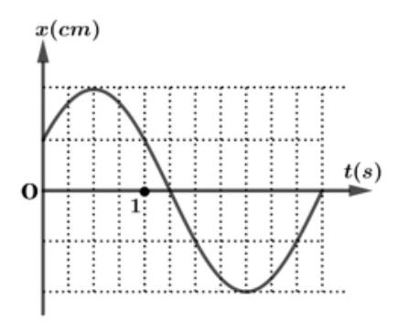
Đáp án và lời giải
Đáp án: \(3\) s. Hướng dẫn giải:
Trên trục thời gian, \(1\) s ứng với \(4\) ô. Từ đồ thị, nửa chu kì chiếm \(6\) ô nên cả chu kì chiếm \(12\) ô:
\(T=\frac{12}{4}=3\ \text{s}.\)
Bài 20
Một chất điểm dao động điều hòa theo phương trình
Trong một chu kì, chất điểm đi được quãng đường bao nhiêu xentimét?
Đáp án và lời giải
Đáp án: \(12\) cm. Hướng dẫn giải:
Biên độ là \(A=3\) cm. Trong một chu kì, quãng đường vật đi được bằng \(4A\):
\(S=4A=12\ \text{cm}.\)
Bài 21
Cho đồ thị li độ theo thời gian của một vật dao động điều hòa như hình dưới. Tính tần số dao động theo đơn vị héc; làm tròn đến hai chữ số thập phân.
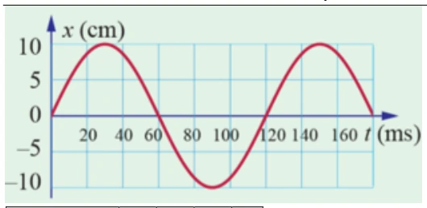
Đáp án và lời giải
Đáp án: \(8{,}33\) Hz. Hướng dẫn giải:
Từ đồ thị, chu kì là \(T=120\) ms \(=0{,}12\) s. Vì \(f=1/T\),
Bài 22
Cho đồ thị li độ theo thời gian của một vật dao động điều hòa như hình dưới. Xác định pha dao động của vật tại thời điểm \(t=4\) s theo đơn vị radian; làm tròn đến hai chữ số thập phân.
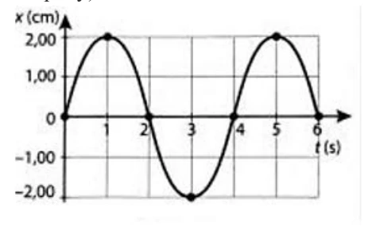
Đáp án và lời giải
Đáp án: \(4{,}71\) rad. Hướng dẫn giải:
Từ đồ thị: \(A=2\) cm, \(T=4\) s nên
Tại \(t=0\), vật qua vị trí cân bằng theo chiều dương, do đó có thể chọn \(\varphi=-\pi/2\). Pha tại \(t=4\) s là
Lưu ý: pha là \(\omega t+\varphi\), không phải giá trị của hàm \(x=A\cos(\omega t+\varphi)\).
Bài 23
Một chất điểm dao động điều hòa theo phương trình
Tại thời điểm \(t=\dfrac13\) s, chất điểm có li độ bằng bao nhiêu xentimét?
Đáp án và lời giải
Đáp án: \(3\) cm. Hướng dẫn giải:
Thay \(t=1/3\) s vào đúng phương trình đã cho:
Bài 24
Cho đồ thị li độ theo thời gian của hai chất điểm dao động điều hòa như hình dưới. Xác định thời điểm gần nhất kể từ \(t=0\) mà đồng thời \(x_1=0\) cm và \(x_2=5\) cm. Kết quả tính bằng giây và làm tròn đến một chữ số thập phân.
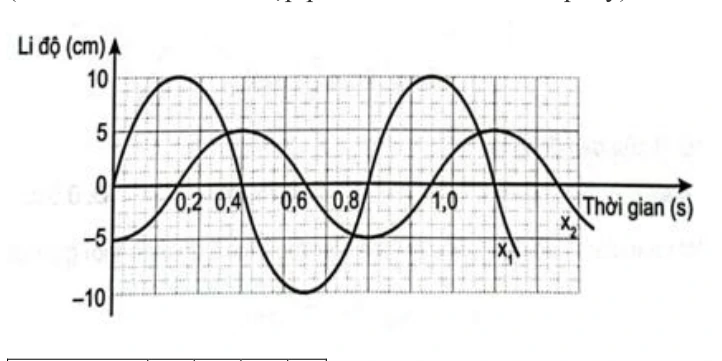
Đáp án và lời giải
Đáp án: \(0{,}4\) s. Hướng dẫn giải:
Quan sát đồng thời hai đường trên đồ thị và xét từ \(t=0\) theo chiều tăng của thời gian. Thời điểm đầu tiên tại đó \(x_1=0\) cm và \(x_2=5\) cm là
Bài 25
Một chất điểm dao động điều hòa với phương trình
Tại thời điểm \(t=\dfrac14\) s, chất điểm có li độ bằng bao nhiêu xentimét?
Đáp án và lời giải
Đáp án: \(-2\) cm. Hướng dẫn giải:
Thay \(t=1/4\) s vào phương trình:
Nhận biết — Trắc nghiệm 4 lựa chọn
Bài 26
Một vật dao động điều hòa trên trục \(Ox\). Đồ thị li độ – thời gian của vật được cho như hình dưới. Phương trình dao động của vật là
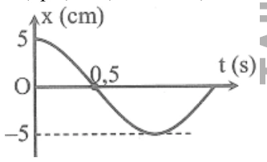
A. \(x=5\cos\left(2\pi t-\dfrac{\pi}{2}\right)\) cm.
B. \(x=5\cos\left(2\pi t+\dfrac{\pi}{2}\right)\) cm.
C. \(x=5\cos\left(\pi t+\dfrac{\pi}{2}\right)\) cm.
D. \(x=5\cos(\pi t)\) cm.
Đáp án và lời giải
Đáp án: D. Hướng dẫn giải:
Từ đồ thị, biên độ \(A=5\) cm. Vật ở biên dương tại \(t=0\) và biên âm tại \(t=1\) s, nên \(T/2=1\) s, tức \(T=2\) s. Do đó
\(\omega=\frac{2\pi}{T}=\pi\ \text{rad/s}.\)
Tại \(t=0\), \(x=A\) nên có thể chọn \(\varphi=0\). Vì vậy
\(x=5\cos(\pi t)\ \text{cm}.\)
Bài 27
Một vật dao động điều hòa có đồ thị li độ – thời gian như hình dưới. Tần số góc của vật là
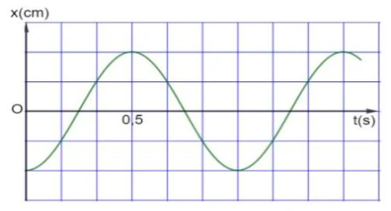
A. \(\pi\) rad/s.
B. \(2\pi\) rad/s.
C. \(\dfrac{\pi}{2}\) rad/s.
D. \(4\pi\) rad/s.
Đáp án và lời giải
Đáp án: B. Hướng dẫn giải:
Từ đồ thị, hai cực đại liên tiếp cách nhau \(1\) s nên \(T=1\) s. Vì vậy
\(\omega=\frac{2\pi}{T}=2\pi\ \text{rad/s}.\)
Bài 28
Một chất điểm dao động điều hòa với phương trình x = Acos(ωt + φ), trong đó A, ω là các hằng số dương. Pha của dao động ở thời điểm t là
A. ωt + φ.
B. ω.
C. φ.
D. ωt.
Đáp án và lời giải
Đáp án: A. Hướng dẫn giải:
Trong dạng \(x=A\cos(\omega t+\varphi)\), pha tại thời điểm \(t\) là \(\omega t+\varphi\).
Bài 29
Một chất điểm dao động điều hòa theo phương trình \(x=A\cos(\omega t+\varphi)\), với \(A>0\). Đại lượng \(A\) được gọi là
A. biên độ của dao động.
B. pha của dao động.
C. tần số góc của dao động.
D. pha ban đầu của dao động.
Đáp án và lời giải
Đáp án: A. Hướng dẫn giải:
Trong dạng chuẩn \(x=A\cos(\omega t+\varphi)\) với \(A>0\), \(A\) là biên độ dao động.
Bài 30
Trong phương trình dao động điều hòa \(x=A\cos(\omega t+\varphi)\), radian (rad) là đơn vị của đại lượng nào?
A. Biên độ \(A\).
B. Tần số góc \(\omega\).
C. Pha dao động \((\omega t+\varphi)\).
D. Chu kì \(T\).
Đáp án và lời giải
Đáp án: C. Hướng dẫn giải:
Pha dao động \((\omega t+\varphi)\) là một góc nên được đo bằng radian. Tần số góc \(\omega\) có đơn vị rad/s, còn \(A\) có đơn vị độ dài và \(T\) có đơn vị giây.
Bài 31
Tần số góc có đơn vị là
A. Hz.
B. cm.
C. rad.
D. rad/s.
Đáp án và lời giải
Đáp án: D. Hướng dẫn giải:
Trong phương trình chuẩn, hệ số của \(t\) trong pha là tần số góc \(\omega\); đơn vị là rad/s.
Bài 32
Một vật dao động điều hòa có li độ, biên độ, tần số và pha ban đầu lần lượt là \(x\), \(A\), \(f\), \(\varphi\). Đại lượng luôn dương trong bốn đại lượng trên là
A. \(f, x\).
B. \(A, f\).
C. \(A, \varphi\).
D. \(A, x\).
Đáp án và lời giải
Đáp án: B. Hướng dẫn giải:
Theo quy ước của phương trình dao động điều hòa, biên độ \(A>0\) và tần số \(f>0\). Li độ \(x\) có thể dương, âm hoặc bằng \(0\); pha ban đầu \(\varphi\) cũng có thể mang dấu tùy cách chọn gốc thời gian.
Bài 33
Một chất điểm dao động có phương trình
Chất điểm này dao động với biên độ là
A. \(5\) cm.
B. \(10\) cm.
C. \(20\) cm.
D. \(15\) cm.
Đáp án và lời giải
Đáp án: A. Hướng dẫn giải:
Biên độ là hệ số dương đứng trước hàm cos, nên \(A=5\) cm.
Bài 34
Một chất điểm dao động điều hòa theo phương trình \(x=A\cos(\omega t+\varphi)\), trong đó \(\omega>0\). Đại lượng \(\omega\) được gọi là
A. biên độ dao động.
B. chu kì dao động.
C. tần số góc của dao động.
D. pha ban đầu của dao động.
Đáp án và lời giải
Đáp án: C. Hướng dẫn giải:
Trong dạng chuẩn \(x=A\cos(\omega t+\varphi)\), \(\omega\) là tần số góc, có đơn vị rad/s.
Bài 35
Một vật dao động điều hòa với phương trình
Pha ban đầu của dao động là
A. \(\dfrac{\pi}{6}\) rad.
B. \(-\dfrac{\pi}{6}\) rad.
C. \(\pi t+\dfrac{\pi}{6}\) rad.
D. \(\dfrac{\pi}{3}\) rad.
Đáp án và lời giải
Đáp án: A. Hướng dẫn giải:
So sánh với \(x=A\cos(\omega t+\varphi)\), ta có pha ban đầu \(\varphi=\dfrac{\pi}{6}\) rad.
Bài 36
Một vật dao động điều hòa theo phương trình
Pha của dao động tại thời điểm \(t\) là
A. \(\dfrac{\pi}{2}\) rad.
B. \(20t+\dfrac{\pi}{2}\) rad.
C. \(2\) rad/s.
D. \(20\) rad.
Đáp án và lời giải
Đáp án: B. Hướng dẫn giải:
Với \(x=A\cos(\omega t+\varphi)\), pha tại thời điểm \(t\) là \(\omega t+\varphi\). Ở đây
\(\Phi(t)=20t+\frac{\pi}{2}\ \text{rad}.\)
Bài 37
Một vật nhỏ dao động điều hòa trên một quỹ đạo dài \(8\) cm. Biên độ dao động bằng
A. \(16\) cm.
B. \(8\) cm.
C. \(48\) cm.
D. \(4\) cm.
Đáp án và lời giải
Đáp án: D. Hướng dẫn giải:
Quỹ đạo dao động là đoạn thẳng từ \(-A\) đến \(+A\), có độ dài \(L=2A\). Do \(L=8\) cm,
\(A=\frac{L}{2}=4\ \text{cm}.\)
Bài 38
Một vật nhỏ dao động điều hòa theo phương trình \(x=A\cos(10t)\), với \(t\) tính bằng giây. Tại \(t=2\) s, pha của dao động là
A. \(5\) rad.
B. \(10\) rad.
C. \(40\) rad.
D. \(20\) rad.
Đáp án và lời giải
Đáp án: D. Hướng dẫn giải:
Pha dao động là \(\Phi=10t\). Tại \(t=2\) s:
\(\Phi=10\cdot2=20\ \text{rad}.\)
Bài 39
Một chất điểm dao động theo phương trình \(x=6\cos(\omega t)\) (cm). Biên độ dao động của chất điểm là
A. \(12\) cm.
B. \(3\) cm.
C. \(6\) cm.
D. \(2\) cm.
Đáp án và lời giải
Đáp án: C. Hướng dẫn giải:
Trong phương trình \(x=A\cos(\omega t+\varphi)\), biên độ là hệ số dương đứng trước hàm cos. Vì vậy \(A=6\) cm.
Bài 40
Chu kì trong dao động điều hòa có đơn vị là
A. Hz.
B. kg.
C. m.
D. s.
Đáp án và lời giải
Đáp án: D. Hướng dẫn giải:
Chu kì là thời gian ngắn nhất để trạng thái dao động lặp lại; \(T=2\pi/\omega=1/f\).
Bài 41
Một chất điểm dao động điều hòa trên đoạn thẳng có chiều dài quỹ đạo \(L\). Biên độ dao động là
A. \(2L\).
B. \(\dfrac{L}{2}\).
C. \(L\).
D. \(\dfrac{L}{4}\).
Đáp án và lời giải
Đáp án: B. Hướng dẫn giải:
Vật chuyển động giữa hai biên \(-A\) và \(+A\), nên chiều dài quỹ đạo là \(L=2A\). Suy ra
Bài 42
Công thức nào sau đây biểu diễn đúng mối liên hệ giữa tần số góc \(\omega\), tần số \(f\) và chu kì \(T\) của dao động điều hòa?
A. \(\omega=\dfrac{2\pi}{f}=2\pi T\).
B. \(\omega=\dfrac{T}{2\pi}=2\pi f\).
C. \(\omega=\dfrac{1}{2\pi f}=T\).
D. \(\omega=2\pi f=\dfrac{2\pi}{T}\).
Đáp án và lời giải
Đáp án: D. Hướng dẫn giải:
Ba đại lượng liên hệ bởi
\(\omega=2\pi f=\frac{2\pi}{T}.\)
Bài 43
Dựa vào đồ thị hai dao động dưới đây. Biết phương trình dao động của một trong hai vật là
Phương trình dao động của vật còn lại là

A. \(x_2=6\cos\left(5\pi t-\dfrac{\pi}{2}\right)\) cm.
B. \(x_2=6\cos(5\pi t)\) cm.
C. \(x_2=6\cos(4\pi t)\) cm.
D. \(x_2=6\cos\left(4\pi t-\dfrac{\pi}{2}\right)\) cm.
Đáp án và lời giải
Đáp án: A. Hướng dẫn giải:
Từ đồ thị chung, dao động còn lại có biên độ \(6\) cm và cùng chu kì với \(x_1\), nên cùng \(\omega=5\pi\) rad/s. Hai dao động lệch nhau một phần tư chu kì, tức \(\pi/2\); dao động thứ hai trễ pha so với \(x_1\). Do đó
\(x_2=6\cos\left(5\pi t-\frac{\pi}{2}\right)\ \text{cm}.\)
Bài 44
Trong phương trình dao động điều hòa \(x=A\cos(\omega t+\varphi)\), radian trên giây (rad/s) là đơn vị của đại lượng
A. \(A\).
B. \(\omega\).
C. \(\omega t+\varphi\).
D. \(T\).
Đáp án và lời giải
Đáp án: B. Hướng dẫn giải:
\(\omega\) là tần số góc nên có đơn vị rad/s. Pha \(\omega t+\varphi\) có đơn vị radian, còn \(T\) có đơn vị giây.
Bài 45
Một vật dao động điều hòa theo phương trình x = 6cos(4πt) cm. Biên độ dao động của vật là
A. 4 cm.
B. 6 cm.
C. –6 cm.
D. 12 m.
Đáp án và lời giải
Đáp án: B. Hướng dẫn giải:
Trong \(x=6\cos(4\pi t)\) cm, hệ số dương đứng trước hàm cos là biên độ. Do đó \(A=6\) cm.
Bài 46
Dựa vào đồ thị li độ – thời gian dưới đây. Biên độ của dao động là
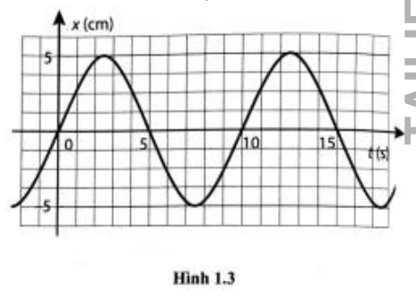
A. \(-5\) cm.
B. \(5\) cm.
C. \(10\) cm.
D. \(-10\) cm.
Đáp án và lời giải
Đáp án: B. Hướng dẫn giải:
Từ đồ thị, li độ cực đại là \(+5\) cm và cực tiểu là \(-5\) cm, nên biên độ \(A=5\) cm.
Bài 47
Dựa vào đồ thị li độ – thời gian dưới đây. Pha ban đầu của dao động là

A. \(0{,}5\pi\) rad.
B. \(-0{,}5\pi\) rad.
C. \(0{,}25\pi\) rad.
D. \(\pi\) rad.
Đáp án và lời giải
Đáp án: B. Hướng dẫn giải:
Tại \(t=0\), vật qua vị trí cân bằng theo chiều dương. Với dạng cos, \(x_0=0\) và \(v_0>0\) cho \(\varphi=-\pi/2\) rad.
Bài 48
Dựa vào đồ thị li độ – thời gian dưới đây. Tần số của dao động là

A. \(0{,}2\) Hz.
B. \(0{,}1\) Hz.
C. \(5\) Hz.
D. \(10\) Hz.
Đáp án và lời giải
Đáp án: B. Hướng dẫn giải:
Hai trạng thái cùng pha liên tiếp trên đồ thị cách nhau \(T=10\) s, nên
Bài 49
Một vật dao động điều hòa thực hiện \(20\) dao động toàn phần trong \(20\) s. Tần số dao động của vật là
A. \(0{,}5\) Hz.
B. \(0{,}05\) Hz.
C. \(2\) Hz.
D. \(1\) Hz.
Đáp án và lời giải
Đáp án: D. Hướng dẫn giải:
Tần số là số dao động toàn phần trong một đơn vị thời gian:
\(f=\frac{N}{\Delta t}=\frac{20}{20}=1\ \text{Hz}.\)
Bài 50
Vật dao động điều hòa với phương trình
trong đó \(t\) được tính bằng giây. Pha ban đầu của dao động là
A. \(-\dfrac{\pi}{4}\).
B. \(\dfrac{\pi}{4}\).
C. \(8\pi\).
D. \(8\pi t-\dfrac{\pi}{4}\).
Đáp án và lời giải
Đáp án: A. Hướng dẫn giải:
So sánh với \(x=A\cos(\omega t+\varphi)\) cho \(\varphi=-\pi/4\).
Bài 51
Trong phương trình dao động điều hòa x = Acos(ωt + φ), đại lượng (ωt + φ) được gọi là
A. biên độ dao động.
B. tần số góc của dao động.
C. pha của dao động.
D. chu kì của dao động.
Đáp án và lời giải
Đáp án: C. Hướng dẫn giải:
Trong dạng \(x=A\cos(\omega t+\varphi)\), pha tại thời điểm \(t\) là \(\omega t+\varphi\).
Bài 52
Một vật nhỏ dao động điều hòa theo phương trình \(x=A\cos(20t)\), với \(t\) tính bằng giây. Tại \(t=2\) s, pha của dao động là
A. \(10\) rad.
B. \(40\) rad.
C. \(5\) rad.
D. \(20\) rad.
Đáp án và lời giải
Đáp án: B. Hướng dẫn giải:
Pha dao động là \(\Phi=20t\). Tại \(t=2\) s:
\(\Phi=20\cdot2=40\ \text{rad}.\)
Bài 53
Một vật dao động điều hòa có phương trình x = 2cos(2πt – π/6) cm. Li độ của vật tại thời điểm t = 0,25 (s) là
A. 1 cm.
B. 1,5 cm.
C. 0,5 cm.
D. –1 cm.
Đáp án và lời giải
Đáp án: A. Hướng dẫn giải:
Tại \(t=0{,}25\) s:
Bài 54
Một vật dao động điều hòa theo phương trình x = 3cos(πt + π/2) cm, pha dao động tại thời điểm t = 1 (s) là
A. π (rad).
B. 2π (rad).
C. 1,5π (rad).
D. 0,5π (rad).
Đáp án và lời giải
Đáp án: C. Hướng dẫn giải:
Pha dao động tại \(t=1\) s là
Bài 55
Một vật dao động điều hòa trên trục \(Ox\). Đồ thị dưới đây biểu diễn sự phụ thuộc của li độ \(x\) vào thời gian \(t\). Phương trình dao động của vật là
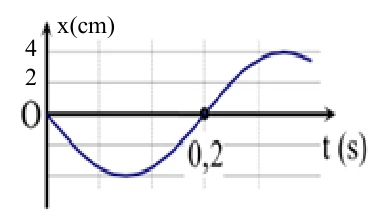
A. \(x=4\cos\left(5\pi t-\dfrac{\pi}{2}\right)\) cm.
B. \(x=8\cos\left(10\pi t+\dfrac{\pi}{2}\right)\) cm.
C. \(x=4\cos\left(5\pi t+\dfrac{\pi}{2}\right)\) cm.
D. \(x=8\cos\left(10\pi t-\dfrac{\pi}{2}\right)\) cm.
Đáp án và lời giải
Đáp án: C. Hướng dẫn giải:
Từ đồ thị: \(A=4\) cm. Hai lần qua vị trí cân bằng cùng chiều cách nhau một chu kì; đọc trên trục thời gian được \(T=0{,}4\) s, nên \(\omega=2\pi/T=5\pi\) rad/s. Tại \(t=0\), \(x=0\) và đồ thị đang đi xuống nên \(v_0<0\), suy ra \(\varphi=\pi/2\). Vì vậy
Bài 56
Dựa vào đồ thị li độ – thời gian dưới đây. Biên độ của dao động là
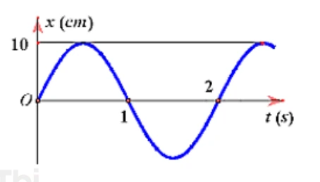
A. \(-5\) cm.
B. \(5\) cm.
C. \(10\) cm.
D. \(-10\) cm.
Đáp án và lời giải
Đáp án: C. Hướng dẫn giải:
Từ đồ thị chung, li độ cực đại có độ lớn \(10\) cm nên \(A=10\) cm.
Bài 57
Dựa vào đồ thị li độ – thời gian dưới đây. Pha ban đầu của dao động là

A. \(0{,}5\pi\) rad.
B. \(-0{,}5\pi\) rad.
C. \(0{,}25\pi\) rad.
D. \(\pi\) rad.
Đáp án và lời giải
Đáp án: B. Hướng dẫn giải:
Tại \(t=0\), đồ thị đi qua vị trí cân bằng theo chiều dương, nên \(\varphi=-\pi/2\) rad.
Bài 58
Dựa vào đồ thị li độ – thời gian dưới đây. Tần số của dao động là

A. \(0{,}2\) Hz.
B. \(0{,}5\) Hz.
C. \(1\) Hz.
D. \(2\) Hz.
Đáp án và lời giải
Đáp án: B. Hướng dẫn giải:
Từ đồ thị, một chu kì kéo dài \(T=2\) s nên
Nhận biết — Đúng/Sai
Bài 59
Một vật dao động điều hòa có đồ thị li độ phụ thuộc thời gian như hình dưới. Xét các phát biểu:
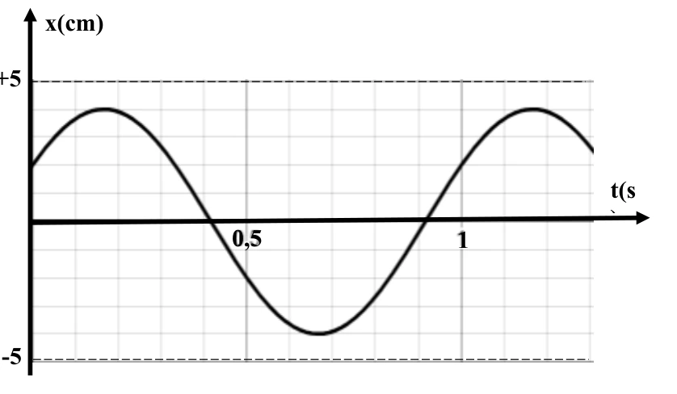
a) Biên độ dao động của vật là \(5\) cm.
b) Tần số dao động của vật là \(1\) Hz.
c) Tần số góc của dao động là \(\pi\) rad/s.
d) Độ dịch chuyển của vật ở thời điểm \(1{,}2\) s là \(2\) cm.
Đáp án và lời giải
Kết luận: a) Sai; b) Đúng; c) Sai; d) Đúng. Hướng dẫn giải:
Từ đồ thị đọc được \(A=4\) cm và \(T=1\) s, nên \(f=1\) Hz và \(\omega=2\pi\) rad/s. Tại \(t=1{,}2\) s, đồ thị cho \(x=2\) cm.
Bài 60
Cho hai dao động điều hòa có đồ thị như hình dưới. Xét các phát biểu:
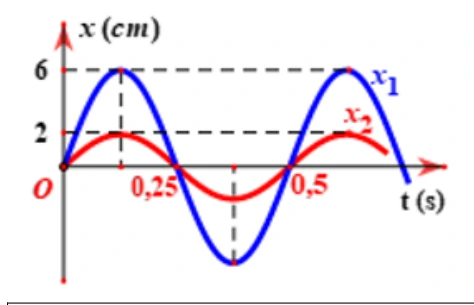
a) Hai dao động có cùng chu kì.
b) Tần số của hai dao động là \(0{,}5\) Hz.
c) Hai dao động cùng pha.
d) Biên độ của hai dao động là \(2\) cm và \(6\) cm.
Đáp án và lời giải
Kết luận: a) Đúng; b) Sai; c) Đúng; d) Đúng. Hướng dẫn giải:
Hai đường có cùng chu kì \(T=0{,}5\) s nên cùng tần số \(f=2\) Hz. Các đỉnh và đáy xuất hiện đồng thời nên hai dao động cùng pha. Biên độ đọc từ trục tung lần lượt là \(2\) cm và \(6\) cm.
Bài 61
Một vật dao động điều hòa có đồ thị li độ phụ thuộc thời gian như hình dưới. Xét các phát biểu:
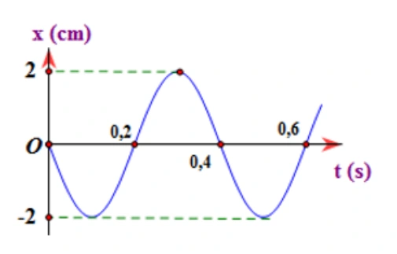
a) Biên độ dao động của vật bằng \(2\) cm.
b) Chu kì dao động của vật bằng \(0{,}6\) s.
c) Pha ban đầu của dao động là \(-0{,}5\pi\) rad.
d) Tại thời điểm \(t=0{,}6\) s, vật ở vị trí cân bằng.
Đáp án và lời giải
Đáp án: a) Đúng; b) Sai; c) Sai; d) Đúng. Hướng dẫn giải:
a) Từ đồ thị, biên độ dao động là \(A=2\) cm nên phát biểu a đúng.
b) Đồ thị lặp lại trạng thái sau \(0{,}4\) s, vì vậy \(T=0{,}4\) s; phát biểu \(T=0{,}6\) s là sai.
c) Tại \(t=0\), vật ở vị trí cân bằng và đi theo chiều âm. Với \(x=A\cos(\omega t+\varphi)\), pha ban đầu là \(\varphi=\dfrac{\pi}{2}\) rad; do đó phát biểu \(-0{,}5\pi\) rad là sai.
d) Tại \(t=0{,}6\) s, đường cong cắt trục \(x=0\) nên vật ở vị trí cân bằng; phát biểu d đúng.
Bài 62
Cho đồ thị li độ theo thời gian của một vật dao động điều hòa như hình dưới. Xét các phát biểu:
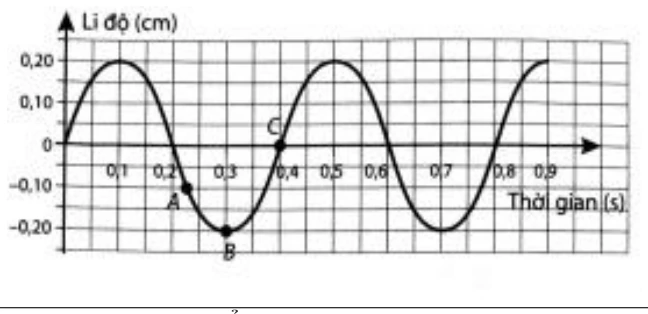
a) Biên độ dao động của vật bằng \(0{,}2\) cm.
b) Chu kì dao động của vật bằng \(0{,}4\) s.
c) Pha ban đầu của dao động là \(0{,}5\pi\) rad.
d) Tại thời điểm \(t=0{,}5\) s, vật ở vị trí biên.
Đáp án và lời giải
Kết luận: a) Đúng; b) Đúng; c) Sai; d) Đúng. Hướng dẫn giải:
Đồ thị cho \(A=0{,}2\) cm và \(T=0{,}4\) s. Trạng thái ban đầu không phù hợp với \(\varphi=\pi/2\). Tại \(t=0{,}5\) s, vật đạt một vị trí biên.
Bài 63
Cho hai dao động điều hòa cùng tần số có đồ thị như hình dưới. Xét các phát biểu:
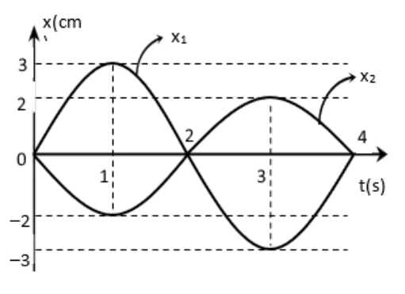
a) Hai dao động có cùng chu kì.
b) Chu kì của hai dao động là \(4\) s.
c) Hai dao động cùng pha.
d) Biên độ của hai dao động là \(3\) cm và \(2\) cm.
Đáp án và lời giải
Kết luận: a) Đúng; b) Đúng; c) Sai; d) Đúng. Hướng dẫn giải:
Hai dao động có cùng chu kì \(T=4\) s nhưng các thời điểm đạt cực trị không trùng nhau, nên không cùng pha. Biên độ đọc trên đồ thị lần lượt là \(3\) cm và \(2\) cm.
Bài 64
Cho đồ thị li độ theo thời gian của một vật dao động điều hòa như hình dưới. Xét các phát biểu:
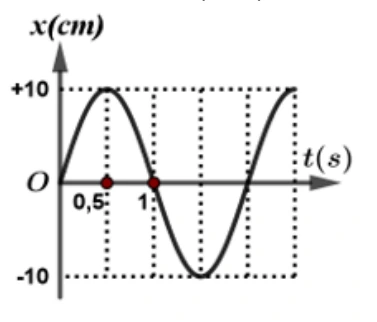
a) Biên độ dao động của vật bằng \(10\) cm.
b) Chu kì dao động của vật bằng \(1\) s.
c) Pha ban đầu của dao động là \(0{,}5\pi\) rad.
d) Tại thời điểm \(t=1{,}5\) s, vật ở vị trí biên.
Đáp án và lời giải
Kết luận: a) Đúng; b) Sai; c) Sai; d) Đúng. Hướng dẫn giải:
Từ đồ thị: \(A=10\) cm. Khoảng thời gian từ một trạng thái lặp lại đến trạng thái tương ứng cho \(T=2\) s, không phải \(1\) s. Ở \(t=0\), vật qua vị trí cân bằng theo chiều dương nên \(\varphi=-\pi/2\) (hoặc một giá trị tương đương modulo \(2\pi\)), không phải \(+\pi/2\). Tại \(t=1{,}5\) s, vật ở biên.
Bài 65
Một vật dao động điều hòa theo phương trình
Xét các phát biểu:
a) Pha ban đầu của dao động là \(10\pi\) rad.
b) Tần số của dao động là \(5\) Hz.
c) Pha dao động tại thời điểm \(t=0{,}075\) s là \(\dfrac{3\pi}{4}\) rad.
d) Tại thời điểm \(t=0{,}075\) s, li độ của vật là \(-2{,}5\sqrt2\) cm.
Đáp án và lời giải
Kết luận: a) Sai; b) Đúng; c) Đúng; d) Đúng. Hướng dẫn giải:
Với \(x=5\cos(10\pi t)\) cm: \(\varphi=0\), \(\omega=10\pi\) rad/s nên \(f=5\) Hz. Tại \(t=0{,}075\) s:
và
Thông hiểu — Trắc nghiệm 4 lựa chọn
Bài 66
Trong phương trình dao động điều hòa x = Acos(ωt + φ) , đại lượng (ωt + φ) gọi là
A. tần số góc của dao động.
B. pha của dao động.
C. biên độ của dao động.
D. chu kì của dao động.
Đáp án và lời giải
Đáp án: B. Hướng dẫn giải:
Trong dạng \(x=A\cos(\omega t+\varphi)\), pha tại thời điểm \(t\) là \(\omega t+\varphi\).
Bài 67
Một vật dao động điều hòa theo phương trình \(x=A\cos(\omega t+\varphi)\) (m). Đại lượng biểu thị độ dịch chuyển có hướng của vật khỏi vị trí cân bằng tại thời điểm \(t\) là
A. \(\omega\).
B. \(A\).
C. \(x\).
D. \(\varphi\).
Đáp án và lời giải
Đáp án: C. Hướng dẫn giải:
Trong phương trình dao động, \(x\) là li độ: độ dịch chuyển có hướng của vật so với vị trí cân bằng tại thời điểm đang xét.
Bài 68
Đối với dao động tuần hoàn, số lần dao động được lặp lại trong một đơn vị thời gian gọi là
A. tần số dao động.
B. chu kỳ dao động.
C. pha ban đầu.
D. tần số góc.
Đáp án và lời giải
Đáp án: A. Hướng dẫn giải:
Theo định nghĩa, tần số \(f\) là số dao động toàn phần vật thực hiện trong một đơn vị thời gian.
Bài 69
Trường hợp nào sau đây chuyển động của vật không phải là dao động cơ?
A. Máy bay hạ cánh xuống sân bay.
B. Chiếc đu đung đưa.
C. Dây đàn vĩ cầm rung động.
D. Pittông chuyển động lên xuống trong xilanh.
Đáp án và lời giải
Đáp án: A. Hướng dẫn giải:
Đối chiếu với định nghĩa dao động cơ: chuyển động lặp lại quanh một vị trí cân bằng.
Bài 70
Hình vẽ là đồ thị dao động điều hòa x(t) của một vật. Biểu thị bằng chữ "B" trong hình là chỉ đại lượng đặc trưng nào của dao động điều hòa?
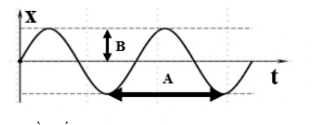
A. Tần số.
B. Chu kỳ.
C. Tần số góc.
D. Biên độ.
Đáp án và lời giải
Đáp án: D. Hướng dẫn giải:
Trên đồ thị, kí hiệu B biểu diễn khoảng cách cực đại từ vị trí cân bằng đến biên, tức biên độ của dao động.
Bài 71
Đồ thị li độ theo thời gian của một chất điểm dao động điều hòa được cho như hình dưới. Pha ban đầu của dao động là
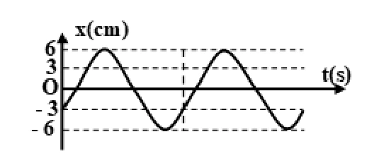
A. \(-\dfrac{2\pi}{3}\) rad.
B. \(\dfrac{2\pi}{3}\) rad.
C. \(\dfrac{\pi}{6}\) rad.
D. \(-\dfrac{\pi}{6}\) rad.
Đáp án và lời giải
Đáp án: A. Hướng dẫn giải:
Từ đồ thị, \(A=6\) cm và tại \(t=0\) có \(x_0=-3\) cm, đồng thời đường cong đang đi lên nên \(v_0>0\).
\(\cos\varphi=\frac{x_0}{A}=-\frac12.\)
Vì \(v_0=-A\omega\sin\varphi>0\) nên \(\sin\varphi<0\). Do đó có thể chọn
\(\varphi=-\frac{2\pi}{3}\ \text{rad}.\)
Bài 72
Một chất điểm dao động điều hòa theo phương trình
Biên độ dao động của chất điểm là
A. \(8\) cm.
B. \(\dfrac{2\pi}{3}\) m.
C. \(0{,}8\) cm.
D. \(\dfrac{2\pi}{3}\) cm.
Đáp án và lời giải
Đáp án: C. Hướng dẫn giải:
Biên độ là \(A=8\) mm. Đổi đơn vị:
Bài 73
Cho một chất điểm dao động điều hòa quanh vị trí cân bằng \(O\). Đồ thị li độ – thời gian được cho như hình dưới. Biên độ dao động là
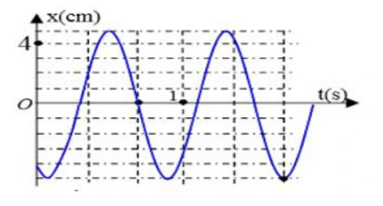
A. \(5\) cm.
B. \(-5\) cm.
C. \(4\) cm.
D. \(-4\) cm.
Đáp án và lời giải
Đáp án: A. Hướng dẫn giải:
Từ đồ thị, li độ cực đại là \(+5\) cm và li độ cực tiểu là \(-5\) cm. Vì biên độ là độ lớn li độ cực đại nên \(A=5\) cm.
Bài 74
Đồ thị dưới biểu diễn sự phụ thuộc của li độ \(x\) vào thời gian \(t\) của một vật dao động điều hòa. Đoạn \(PR\) trên trục thời gian biểu thị
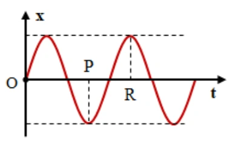
A. một nửa chu kì.
B. hai lần tần số.
C. một nửa tần số.
D. hai lần chu kì.
Đáp án và lời giải
Đáp án: A. Hướng dẫn giải:
Tại hai thời điểm ứng với \(P\) và \(R\), vật ở hai trạng thái ngược pha: một thời điểm ở biên âm và thời điểm kia ở biên dương. Hai trạng thái ngược pha cách nhau nửa chu kì, nên
Bài 75
Một vật dao động điều hòa trên trục \(Ox\). Đồ thị li độ – thời gian được cho như hình dưới. Pha ban đầu của dao động là
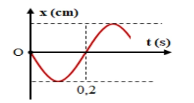
A. \(0{,}5\pi\) rad.
B. \(-0{,}5\pi\) rad.
C. \(0{,}25\pi\) rad.
D. \(\pi\) rad.
Đáp án và lời giải
Đáp án: A. Hướng dẫn giải:
Tại \(t=0\), vật qua vị trí cân bằng nên \(x_0=0\). Đồ thị đi xuống ngay sau \(t=0\), do đó \(v_0<0\).
Với \(x=A\cos(\omega t+\varphi)\):
\(\cos\varphi=0,\qquad v_0=-A\omega\sin\varphi<0.\)
Suy ra \(\sin\varphi>0\), nên có thể chọn
\(\varphi=\frac{\pi}{2}=0{,}5\pi\ \text{rad}.\)
Bài 76
Một vật dao động điều hòa theo phương trình
Li độ của vật tại \(t=5\) s là
A. \(4{,}56\) cm.
B. \(10\) cm.
C. \(4\) cm.
D. \(10\) m.
Đáp án và lời giải
Đáp án: B. Hướng dẫn giải:
Thay \(t=5\) s vào phương trình:
\(x=10\cos(4\pi\cdot5)=10\cos(20\pi)=10\ \text{cm}.\)
Bài 77
Một vật dao động điều hòa theo phương trình
Tần số góc của dao động là
A. \(4\pi\) Hz.
B. \(4\pi\) rad.
C. \(4\pi\) rad/s.
D. \(4\pi\) s.
Đáp án và lời giải
Đáp án: C. Hướng dẫn giải:
So sánh với \(x=A\cos(\omega t+\varphi)\), hệ số của \(t\) trong pha là
Bài 78
Một vật nhỏ dao động điều hòa với biên độ \(A=4\) cm. Tại một thời điểm, pha dao động bằng \(\dfrac{\pi}{4}\) rad. Khi đó vật có li độ và chiều chuyển động là
A. \(-2\) cm và chuyển động theo chiều dương của trục \(Ox\).
B. \(2\sqrt2\) cm và chuyển động theo chiều âm của trục \(Ox\).
C. \(-2\) cm và chuyển động theo chiều âm của trục \(Ox\).
D. \(2\sqrt2\) cm và chuyển động theo chiều dương của trục \(Ox\).
Đáp án và lời giải
Đáp án: B. Hướng dẫn giải:
Với pha \(\Phi=\pi/4\):
\(x=A\cos\Phi=4\cos\frac{\pi}{4}=2\sqrt2\ \text{cm}.\)
Vận tốc có dấu
\(v=-A\omega\sin\Phi<0\)
vì \(\sin(\pi/4)>0\). Do đó vật đang chuyển động theo chiều âm.
Bài 79
Một dao động điều hòa thực hiện được \(5\) dao động toàn phần trong \(4{,}8\) s. Chu kì dao động là
A. \(4{,}8\) s.
B. \(0{,}96\) s.
C. \(9{,}8\) s.
D. \(9{,}6\) s.
Đáp án và lời giải
Đáp án: B. Hướng dẫn giải:
So sánh với dạng \(x=A\cos(\omega t+\varphi)\) và dùng \(T=2\pi/\omega\), \(f=1/T\); trong một chu kì, quãng đường đi được là \(4A\).
\(T=\frac{\Delta t}{N}=\frac{4{,}8}{5}=0{,}96\ \text{s}.\)
Đối chiếu kết quả với các lựa chọn, phương án phù hợp là B. \(0{,}96\) s.
Bài 80
Một chất điểm dao động điều hòa có tần số góc \(\omega=10\pi\) rad/s. Tần số dao động là
A. \(5\) Hz.
B. \(10\) Hz.
C. \(20\) Hz.
D. \(5\pi\) Hz.
Đáp án và lời giải
Đáp án: A. Hướng dẫn giải:
\(f=\frac{\omega}{2\pi}=\frac{10\pi}{2\pi}=5\ \text{Hz}.\)
Bài 81
Một vật dao động điều hòa trên trục \(Ox\). Đồ thị li độ – thời gian được cho như hình dưới. Tần số góc của dao động bằng
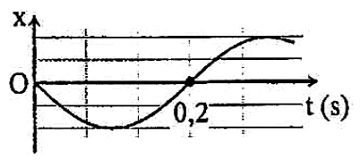
A. \(5\pi\) rad/s.
B. \(5\) rad/s.
C. \(10\) rad/s.
D. \(10\pi\) rad/s.
Đáp án và lời giải
Đáp án: A. Hướng dẫn giải:
Từ đồ thị, thời gian từ lúc qua vị trí cân bằng theo chiều âm đến lần kế tiếp qua vị trí cân bằng theo chiều dương là \(0{,}2\) s, tức \(T/2=0{,}2\) s. Do đó \(T=0{,}4\) s và
\(\omega=\frac{2\pi}{T}=5\pi\ \text{rad/s}.\)
Bài 82
Hình dưới là đồ thị li độ – thời gian \((x-t)\) của một vật dao động điều hòa. Thời điểm vật đi qua vị trí cân bằng lần đầu tiên là
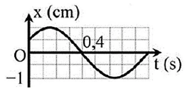
A. \(0{,}4\) s.
B. \(0{,}2\) s.
C. \(0{,}1\) s.
D. \(0{,}8\) s.
Đáp án và lời giải
Đáp án: A. Hướng dẫn giải:
Vị trí cân bằng ứng với \(x=0\). Quan sát đồ thị từ \(t=0\), lần đầu đường cong cắt trục thời gian tại \(t=0{,}4\) s.
Vì vậy thời điểm vật đi qua vị trí cân bằng lần đầu tiên là \(0{,}4\) s.
Bài 83
Một vật dao động điều hòa trên trục \(Ox\). Hình dưới là đồ thị biểu diễn sự phụ thuộc của li độ \(x\) vào thời gian \(t\). Tần số và biên độ của dao động lần lượt là
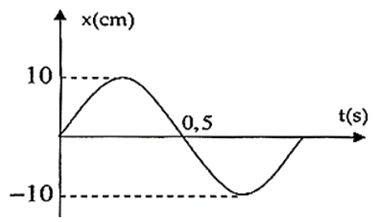
A. \(2\) Hz và \(10\) cm.
B. \(2\) Hz và \(20\) cm.
C. \(1\) Hz và \(10\) cm.
D. \(1\) Hz và \(20\) cm.
Đáp án và lời giải
Đáp án: C. Hướng dẫn giải:
Từ đồ thị, độ lớn li độ cực đại là \(10\) cm nên biên độ \(A=10\) cm.
Hai trạng thái cùng pha liên tiếp lặp lại sau \(1\) s, do đó \(T=1\) s và
\(f=\frac{1}{T}=1\ \text{Hz}.\)
Vậy \(f=1\) Hz và \(A=10\) cm.
Bài 84
Một dao động điều hòa có đồ thị như hình dưới. Kết luận nào sau đây sai?
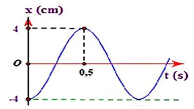
A. \(A=4\) cm.
B. \(T=0{,}5\) s.
C. \(f=1\) Hz.
D. \(\omega=2\pi\) rad/s.
Đáp án và lời giải
Đáp án: B. Hướng dẫn giải:
Từ đồ thị, biên độ \(A=4\) cm. Vật đi từ biên âm tại \(t=0\) đến biên dương tại \(t=0{,}5\) s, đây là nửa chu kì:
\(\frac{T}{2}=0{,}5\ \text{s}\Rightarrow T=1\ \text{s}.\)
Suy ra \(f=1\) Hz và \(\omega=2\pi\) rad/s. Vì vậy phát biểu B là sai.
Bài 85
Hình dưới là đồ thị li độ – thời gian của hai dao động. Nhận định nào sau đây đúng?
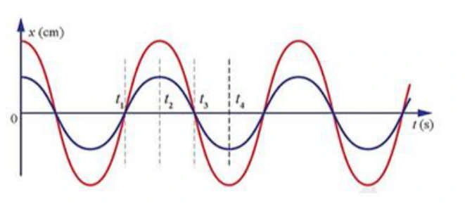
A. Hai dao động cùng biên độ và cùng tần số.
B. Hai dao động khác biên độ và khác tần số.
C. Hai dao động khác biên độ và cùng tần số.
D. Hai dao động cùng biên độ và khác tần số.
Đáp án và lời giải
Đáp án: C. Hướng dẫn giải:
Hai đường có các thời điểm lặp lại trạng thái cách nhau như nhau, nên chúng có cùng chu kì và cùng tần số. Tuy nhiên độ lệch cực đại của hai đường so với vị trí cân bằng khác nhau, nên biên độ khác nhau.
Bài 86
Một chất điểm dao động điều hòa theo phương trình
Tần số dao động là
A. \(10\) Hz.
B. \(20\) Hz.
C. \(10\pi\) Hz.
D. \(5\) Hz.
Đáp án và lời giải
Đáp án: D. Hướng dẫn giải:
\(\omega=10\pi\) rad/s, do đó
\(f=\frac{\omega}{2\pi}=5\ \text{Hz}.\)
Bài 87
Một vật dao động điều hòa với biên độ \(A=5\) cm. Giá trị nào sau đây có thể là li độ của vật?
A. \(x=6\) cm.
B. \(x=10\) cm.
C. \(x=-6\) cm.
D. \(x=1{,}2\) cm.
Đáp án và lời giải
Đáp án: D. Hướng dẫn giải:
Trong dao động điều hòa, li độ luôn thỏa \(|x|\le A\). Với \(A=5\) cm, chỉ \(x=1{,}2\) cm nằm trong khoảng \([-5;5]\) cm.
Bài 88
Một vật dao động điều hòa thực hiện được \(30\) dao động trong \(3\) s. Tần số góc của dao động là
A. \(10\) rad/s.
B. \(20\pi\) rad/s.
C. \(90\) rad/s.
D. \(0{,}1\) rad/s.
Đáp án và lời giải
Đáp án: B. Hướng dẫn giải:
\(f=\frac{N}{\Delta t}=\frac{30}{3}=10\ \text{Hz}.\)
Do đó
\(\omega=2\pi f=20\pi\ \text{rad/s}.\)
Bài 89
Dựa vào đồ thị li độ – thời gian dưới đây, pha ban đầu của dao động là
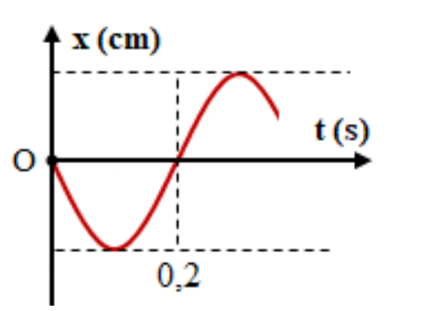
A. \(0{,}5\pi\) rad.
B. \(-0{,}5\pi\) rad.
C. \(0{,}25\pi\) rad.
D. \(\pi\) rad.
Đáp án và lời giải
Đáp án: A. Hướng dẫn giải:
Tại \(t=0\), vật qua vị trí cân bằng và đồ thị đi xuống, nên \(x_0=0\), \(v_0<0\). Với dạng cos, điều này tương ứng
\(\varphi=\frac{\pi}{2}=0{,}5\pi\ \text{rad}.\)
Bài 90
Dựa vào đồ thị li độ – thời gian dưới đây, chu kì dao động là
A. \(0{,}2\) s.
B. \(0{,}4\) s.
C. \(5\) s.
D. \(2{,}5\) s.
Đáp án và lời giải
Đáp án: B. Hướng dẫn giải:
Tại \(t=0\), vật qua vị trí cân bằng theo chiều âm. Đến \(t=0{,}2\) s, vật qua vị trí cân bằng theo chiều dương. Hai trạng thái này ngược pha và cách nhau \(T/2\), nên
\(\frac{T}{2}=0{,}2\ \text{s}\Rightarrow T=0{,}4\ \text{s}.\)
Bài 91
Một vật dao động điều hòa theo phương trình
trong đó \(t\) tính bằng giây. Tần số dao động của vật là
A. \(5\) Hz.
B. \(15\) Hz.
C. \(10\) Hz.
D. \(6\) Hz.
Đáp án và lời giải
Đáp án: A. Hướng dẫn giải:
Khai triển pha: \(10(\pi t+\pi/4)=10\pi t+5\pi/2\), nên \(\omega=10\pi\) rad/s và \(f=\omega/(2\pi)=5\) Hz.
Bài 92
Một vật dao động điều hòa theo phương trình
trong đó \(t\) tính bằng giây. Thời gian để vật thực hiện một dao động toàn phần là
A. \(4\) s.
B. \(0{,}5\) s.
C. \(2\) s.
D. \(1\) s.
Đáp án và lời giải
Đáp án: B. Hướng dẫn giải:
\(\omega=4\pi\) rad/s nên \(T=2\pi/\omega=0{,}5\) s.
Bài 93
Một chất điểm dao động điều hòa với phương trình
Tại thời điểm \(t=0{,}25\) s, chất điểm có li độ bằng
A. \(2\) cm.
B. \(\sqrt3\) cm.
C. \(-\sqrt3\) cm.
D. \(-2\) cm.
Đáp án và lời giải
Đáp án: D. Hướng dẫn giải:
Bài 94
Một vật dao động điều hòa theo phương trình
Tần số và pha ban đầu của dao động lần lượt là
A. \(10\) Hz và \(-\dfrac{\pi}{6}\) rad.
B. \(0{,}1\) Hz và \(\dfrac{\pi}{6}\) rad.
C. \(0{,}1\) Hz và \(-\dfrac{\pi}{6}\) rad.
D. \(10\) Hz và \(\dfrac{\pi}{6}\) rad.
Đáp án và lời giải
Đáp án: A. Hướng dẫn giải:
Từ phương trình, \(\omega=20\pi\) rad/s và \(\varphi=-\pi/6\). Vì vậy
\(f=\frac{\omega}{2\pi}=10\ \text{Hz}.\)
Bài 95
Một chất điểm dao động điều hòa theo phương trình
Chu kì dao động của chất điểm là
A. \(1\) s.
B. \(2\) s.
C. \(0{,}5\) s.
D. \(1\) Hz.
Đáp án và lời giải
Đáp án: A. Hướng dẫn giải:
\(\omega=2\pi\) rad/s nên
\(T=\frac{2\pi}{\omega}=1\ \text{s}.\)
Bài 96
Một vật dao động tuần hoàn, mỗi phút thực hiện được \(360\) dao động. Tần số dao động của vật là
A. \(7\) Hz.
B. \(5\) Hz.
C. \(8\) Hz.
D. \(6\) Hz.
Đáp án và lời giải
Đáp án: D. Hướng dẫn giải:
Một phút bằng \(60\) s, do đó
\(f=\frac{N}{\Delta t}=\frac{360}{60}=6\ \text{Hz}.\)
Vận dụng — Trả lời ngắn
Bài 97
Một chất điểm dao động điều hòa với biên độ \(5\) cm và thời gian thực hiện một dao động toàn phần là \(\dfrac13\) s. Tính tốc độ trung bình trong một dao động, theo đơn vị m/s. Làm tròn đến một chữ số thập phân.
Đáp án và lời giải
Đáp án: \(0{,}6\) m/s. Hướng dẫn giải:
Trong một chu kì, vật đi quãng đường \(4A=20\) cm \(=0{,}20\) m. Do đó
\(\bar v=\frac{4A}{T}=\frac{0{,}20}{1/3}=0{,}60\ \text{m/s}.\)
Bài 98
Một vật dao động điều hòa trên trục \(Ox\). Đồ thị li độ – thời gian được cho như hình dưới. Chu kì dao động của vật bằng bao nhiêu giây?
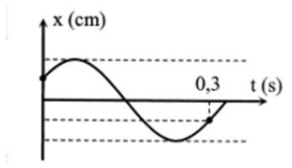
Đáp án và lời giải
Đáp án: \(0{,}36\) s. Hướng dẫn giải:
Tại \(t=0\), đồ thị cho \(x=A/2\) và vật đang đi lên, tương ứng pha \(\varphi=-\pi/3\).
Từ trạng thái ban đầu đến trạng thái được đánh dấu tại \(t=0{,}3\) s, vật lần lượt đi qua các khoảng pha tương ứng \(T/6\), \(T/2\) và \(T/6\). Vì vậy
\(0{,}3=\frac{T}{6}+\frac{T}{2}+\frac{T}{6}=\frac{5T}{6}.\)
Suy ra
\(T=0{,}3\cdot\frac65=0{,}36\ \text{s}.\)
Bài 99
Một vật dao động điều hòa theo phương trình
Kể từ thời điểm \(t=\dfrac{13}{8}\) s, xác định thời điểm gần nhất tính từ gốc thời gian mà vật đi qua vị trí cách vị trí cân bằng \(3\sqrt2\) cm lần thứ hai, đồng thời vật đang chuyển động ra xa vị trí cân bằng.
Đáp án và lời giải
Đáp án: \(2{,}5\) s. Hướng dẫn giải:
Chu kì \(T=1\) s. Tại \(t_0=13/8\) s:
nên vật đang ở biên dương \(x=A\). Điều kiện cách vị trí cân bằng \(3\sqrt2\) cm tương ứng \(|x|=A\sqrt2/2\). Kể từ biên dương, hai lần đầu thỏa điều kiện và đang đi ra xa vị trí cân bằng lần lượt xuất hiện sau các quãng pha thích hợp; lần thứ hai cách trạng thái ban đầu \(7T/8\). Vì vậy
Bài 100
Một vật dao động điều hòa theo phương trình
Kể từ \(t=0\), thời điểm vật đi qua vị trí \(x=8\) cm lần thứ 16 là bao nhiêu giây?
Đáp án và lời giải
Đáp án: \(4{,}85\) s. Hướng dẫn giải:
Ta có
\(\omega=3\pi\ \text{rad/s},\qquad T=\frac{2\pi}{\omega}=\frac23\ \text{s}.\)
Điều kiện \(x=8\) cm cho
\(\cos\Phi=\frac{8}{10}=0{,}8.\)
Đặt \(\alpha=\arccos(0{,}8)\). Tại \(t=0\), pha \(\Phi_0=-\pi/3\). Trong mỗi chu kì vật đi qua \(x=8\) cm hai lần. Sau \(7T\) đã có \(14\) lần; trong chu kì tiếp theo, lần thứ 16 ứng với pha \(\Phi=2\pi+\alpha\) tính từ đầu chu kì đó. Do đó
\(t=7T+\frac{T}{6}+\frac{\alpha}{2\pi}T =\frac{14}{3}+\frac19+\frac{\arccos(0{,}8)}{3\pi} \approx4{,}846\ \text{s}.\)
Làm tròn đến hai chữ số thập phân: \(t\approx4{,}85\) s.
Bài 101
Cho đồ thị li độ – thời gian của một vật dao động điều hòa như hình dưới. Độ dịch chuyển của vật từ lúc \(t_1=5\) s đến \(t_2=9\) s là bao nhiêu xentimét?
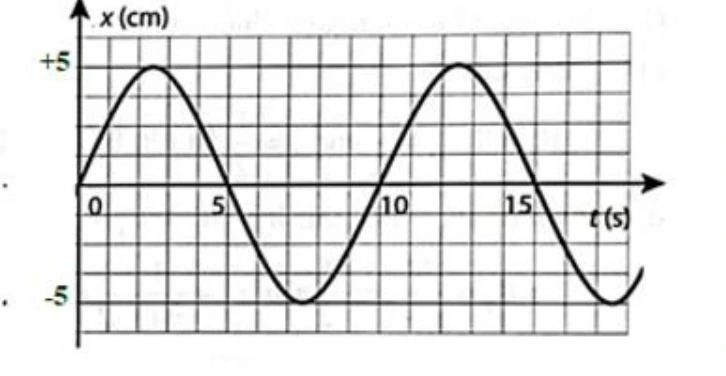
Đáp án và lời giải
Đáp án: \(-2{,}5\) cm. Hướng dẫn giải:
Từ đồ thị:
- tại \(t_1=5\) s: \(x_1=0\) cm;
- tại \(t_2=9\) s: \(x_2=-2{,}5\) cm.
Theo định nghĩa độ dịch chuyển trong khoảng thời gian này:
Dấu âm cho biết vị trí cuối nằm về phía âm của trục tọa độ so với vị trí đầu.
Bài 102
Một vật dao động điều hòa theo phương trình
Kể từ thời điểm \(t=\dfrac{41}{12}\) s, xác định thời điểm gần nhất tính từ gốc thời gian mà vật đi qua vị trí \(x=3\) cm lần thứ hai. Kết quả làm tròn đến hai chữ số thập phân.
Đáp án và lời giải
Đáp án: \(3{,}71\) s. Hướng dẫn giải:
Ta có \(\omega=5\pi\) rad/s nên \(T=0{,}4\) s. Tại \(t_0=41/12\) s:
Điều kiện \(x=3\) cm cho
Đặt \(\alpha=\arccos(3/4)\). Sau pha \(3\pi/4\), hai lần tiếp theo vật đạt \(x=3\) cm ứng với \(\Phi=2\pi-\alpha\) và \(\Phi=2\pi+\alpha\). Vì đề hỏi lần thứ hai, ta dùng \(2\pi+\alpha\):
Suy ra
Vận dụng — Trắc nghiệm 4 lựa chọn
Bài 103
Hình dưới là đồ thị biểu diễn độ dời \(x\) theo thời gian \(t\) của một vật dao động điều hòa. Phương trình dao động của vật là
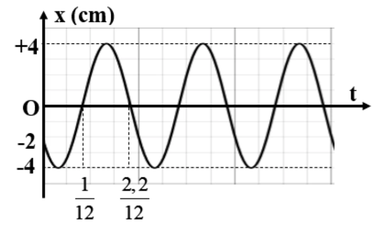
A. \(x=4\cos\left(10\pi t+\dfrac{2\pi}{3}\right)\) cm.
B. \(x=4\cos\left(20\pi t+\dfrac{2\pi}{3}\right)\) cm.
C. \(x=4\cos\left(10\pi t+\dfrac{5\pi}{6}\right)\) cm.
D. \(x=4\cos\left(20\pi t-\dfrac{\pi}{3}\right)\) cm.
Đáp án và lời giải
Đáp án: A. Hướng dẫn giải:
Từ đồ thị đọc được \(A=4\) cm. Chu kì \(T=0{,}2\) s nên \(\omega=10\pi\) rad/s. Trạng thái ban đầu trên đồ thị cho \(\varphi=2\pi/3\), vì vậy phương án A phù hợp.
Bài 104
Một vật dao động điều hòa trên trục \(Ox\). Tại \(t=0\), vật ở biên dương. Tại các thời điểm \(t=\tau\) và \(t=2\tau\), vật có li độ lần lượt là \(3\sqrt2\) cm và \(-5\) cm. Biên độ dao động của vật bằng
A. \(9\) cm.
B. \(3\) cm.
C. \(6\) cm.
D. \(5\) cm.
Đáp án và lời giải
Đáp án: A. Hướng dẫn giải:
Vì tại \(t=0\) vật ở biên dương, có thể viết
Đặt \(c=\cos(\omega\tau)\). Từ dữ kiện tại \(t=\tau\):
Tại \(t=2\tau\):
\(A\cos(2\omega\tau)=A(2c^2-1)=-5.\tag{2}\)
Từ (1), \(c^2=18/A^2\). Thay vào (2):
\(A\left(\frac{36}{A^2}-1\right)=-5 \Rightarrow A^2-5A-36=0.\)
Do \(A>0\), suy ra \(A=9\) cm.
Bài 105
Một vật dao động điều hòa trên trục \(Ox\). Hình dưới là đồ thị biểu diễn sự phụ thuộc của li độ \(x\) vào thời gian \(t\). Phương trình dao động của vật là
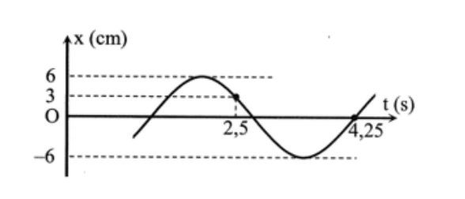
A. \(x=6\cos\left(\dfrac{\pi}{3}t-\dfrac{2\pi}{3}\right)\) cm.
B. \(x=6\cos\left(\dfrac{2\pi}{3}t+\dfrac{2\pi}{3}\right)\) cm.
C. \(x=6\cos\left(\dfrac{\pi}{3}t+\dfrac{2\pi}{3}\right)\) cm.
D. \(x=6\cos\left(\dfrac{2\pi}{3}t-\dfrac{2\pi}{3}\right)\) cm.
Đáp án và lời giải
Đáp án: B. Hướng dẫn giải:
Từ đồ thị đọc được \(A=6\) cm. Khoảng thời gian từ \(t=2{,}5\) s đến \(t=4{,}25\) s tương ứng tổng \(T/3+T/4=7T/12\), do đó
Tại \(t=2{,}5\) s, vật có \(x=A/2\) ở nhánh phù hợp của đồ thị, suy ra pha tại thời điểm đó là \(\pi/3\) (theo modulo \(2\pi\)). Từ \(\omega t+\varphi\equiv\pi/3\) ta được \(\varphi\equiv2\pi/3\). Vậy
Bài 106
Một vật dao động điều hòa trên trục \(Ox\). Đồ thị li độ – thời gian được cho như hình dưới. Pha ban đầu của dao động là
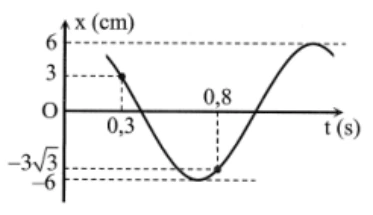
A. \(\dfrac{\pi}{6}\) rad.
B. \(-\dfrac{\pi}{6}\) rad.
C. \(\dfrac{\pi}{3}\) rad.
D. \(-\dfrac{\pi}{3}\) rad.
Đáp án và lời giải
Đáp án: B. Hướng dẫn giải:
Từ đồ thị, khoảng thời gian từ \(t=0{,}3\) s đến \(t=0{,}8\) s tương ứng
\(\frac{T}{3}+\frac{T}{12}=0{,}5\ \text{s}.\)
Suy ra \(T=6/5\) s và
\(\omega=\frac{2\pi}{T}=\frac{5\pi}{3}\ \text{rad/s}.\)
Tại \(t=0{,}3\) s, đồ thị cho \(x=A/2\) và vật đang đi xuống, nên pha khi đó là \(\pi/3\). Vì
\(\omega\cdot0{,}3+\varphi=\frac{\pi}{3},\)
ta có
\(\frac{5\pi}{3}\cdot0{,}3+\varphi=\frac{\pi}{3} \Rightarrow \varphi=-\frac{\pi}{6}.\)
Bài 107
Một vật dao động điều hòa theo phương trình
Tần số góc của dao động là
A. \(2\pi\) rad/s.
B. \(\pi\) rad/s.
C. \(2\pi t\) rad/s.
D. \((2\pi t+\pi)\) rad/s.
Đáp án và lời giải
Đáp án: A. Hướng dẫn giải:
So sánh với \(x=A\cos(\omega t+\varphi)\), ta đọc trực tiếp
Bài 108
Trong phương trình dao động điều hòa
độ dịch chuyển cực đại của vật tính từ vị trí cân bằng là
A. biên độ \(A\).
B. tần số góc \(\omega\).
C. pha dao động \((\omega t+\varphi_0)\).
D. chu kì \(T\).
Đáp án và lời giải
Đáp án: A. Hướng dẫn giải:
Biên độ \(A\) chính là độ lớn li độ cực đại, tức khoảng cách lớn nhất từ vật đến vị trí cân bằng.
Bài 109
Phương trình dao động của một vật dao động điều hòa có dạng
Gốc thời gian đã được chọn lúc nào?
A. Lúc chất điểm đi qua vị trí \(x=A/2\) theo chiều dương.
B. Lúc chất điểm đi qua vị trí \(x=A\sqrt2/2\) theo chiều dương.
C. Lúc chất điểm đi qua vị trí \(x=-A\sqrt2/2\) theo chiều âm.
D. Lúc chất điểm đi qua vị trí \(x=A/2\) theo chiều âm.
Đáp án và lời giải
Đáp án: C. Hướng dẫn giải:
Tại \(t=0\), pha bằng \(3\pi/4\), nên \(x_0=A\cos(3\pi/4)=-A\sqrt2/2\). Đồng thời \(v_0=-A\omega\sin(3\pi/4)<0\), tức vật đang chuyển động theo chiều âm.
Bài 110
Một chất điểm dao động điều hòa có phương trình li độ theo thời gian
Tần số dao động là
A. \(10\) Hz.
B. \(20\) Hz.
C. \(10\pi\) Hz.
D. \(5\) Hz.
Đáp án và lời giải
Đáp án: A. Hướng dẫn giải:
Hệ số của \(t\) trong pha là \(\omega=20\pi\) rad/s, do đó \(f=\omega/(2\pi)=10\) Hz.
Bài 111
Trường hợp nào sau đây chuyển động của vật không phải là dao động cơ?
A. Dây đàn vĩ cầm rung động.
B. Cành cây đung đưa trước gió.
C. Thuyền nhấp nhô trên mặt biển.
D. Thả một vật rơi từ trên cao xuống.
Đáp án và lời giải
Đáp án: D. Hướng dẫn giải:
Dao động cơ là chuyển động có trạng thái lặp lại quanh một vị trí cân bằng. Dây đàn rung, cành cây đung đưa và thuyền nhấp nhô đều có tính dao động; vật rơi tự do từ trên cao xuống không chuyển động qua lại quanh một vị trí cân bằng.
Bài 112
Nhận định nào sau đây là đúng?
A. Biên độ là đại lượng đại số.
B. Biên độ là đại lượng luôn dương.
C. Biên độ là đại lượng luôn âm.
D. Biên độ là đại lượng biến đổi theo thời gian.
Đáp án và lời giải
Đáp án: B. Hướng dẫn giải:
Biên độ là độ lệch cực đại so với vị trí cân bằng và được lấy dương; trong phương trình chuẩn nó là hệ số \(A\).
Bài 113
Trong phương trình dao động điều hòa
phát biểu nào sau đây sai?
A. Biên độ \(A\) phụ thuộc vào cách kích thích dao động.
B. Biên độ \(A\) không phụ thuộc vào cách chọn gốc thời gian.
C. Pha ban đầu \(\varphi_0\) không phụ thuộc vào cách chọn gốc thời gian.
D. Tần số góc \(\omega\) phụ thuộc vào các đặc tính của hệ.
Đáp án và lời giải
Đáp án: C. Hướng dẫn giải:
Pha ban đầu \(\varphi_0\) phụ thuộc vào cách chọn gốc thời gian. Nếu thay đổi mốc \(t=0\), giá trị pha ban đầu thay đổi tương ứng. Vì vậy phát biểu C là sai.
Biên độ không thay đổi chỉ vì đổi mốc thời gian, còn tần số góc của dao động riêng được quyết định bởi các đặc tính của hệ.
Bài 114
Một vật dao động điều hòa theo phương trình
Chu kì và tần số dao động của vật là
A. \(T=2\) s và \(f=0{,}5\) Hz.
B. \(T=0{,}5\) s và \(f=2\) Hz.
C. \(T=0{,}25\) s và \(f=4\) Hz.
D. \(T=4\) s và \(f=0{,}5\) Hz.
Đáp án và lời giải
Đáp án: B. Hướng dẫn giải:
\(\omega=4\pi\) rad/s nên
\(T=\frac{2\pi}{\omega}=\frac12\ \text{s}=0{,}5\ \text{s}, \qquad f=\frac1T=2\ \text{Hz}.\)
Bài 115
Một vật dao động điều hòa có đồ thị biểu diễn như hình dưới. Phương trình dao động của vật là
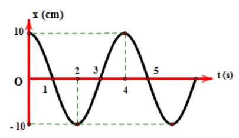
A. \(x=10\cos(0{,}5\pi t)\) cm.
B. \(x=10\cos\left(4t+\dfrac{\pi}{2}\right)\) cm.
C. \(x=4\cos(10t)\) cm.
D. \(x=10\cos(8\pi t)\) cm.
Đáp án và lời giải
Đáp án: A. Hướng dẫn giải:
Từ đồ thị: \(A=10\) cm. Hai cực đại liên tiếp ở \(t=0\) s và \(t=4\) s nên \(T=4\) s:
Tại \(t=0\), vật ở biên dương nên có thể chọn \(\varphi=0\). Do đó
Bài 116
Dựa vào đồ thị hai dao động dưới đây. Chu kì dao động là
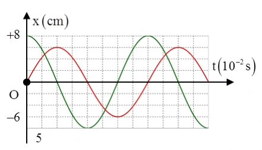
A. \(0{,}5\) s.
B. \(0{,}02\) s.
C. \(0{,}4\) s.
D. \(0{,}05\) s.
Đáp án và lời giải
Đáp án: C. Hướng dẫn giải:
Trên trục thời gian, mỗi ô ứng với \(5\times10^{-2}\) s. Một chu kì dài \(8\) ô, do đó
\(T=8\cdot5\times10^{-2}=0{,}4\ \text{s}.\)
Vận dụng — Đúng/Sai
Bài 117
Vật dao động điều hòa có đồ thị li độ phụ thuộc thời gian như hình dưới. Xét các phát biểu:
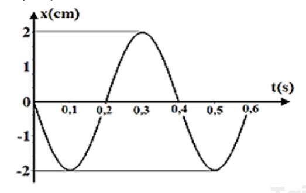
a) Tại thời điểm \(t=0{,}1\) s, li độ của vật là \(-2\) cm.
b) Quãng đường vật đi được sau \(0{,}6\) s là \(10\) cm.
c) Tại thời điểm \(t=0{,}5\) s, li độ của vật là \(-2\) cm.
d) Tại thời điểm \(t=0\), vật ở biên dương.
Đáp án và lời giải
Kết luận: a) Đúng; b) Sai; c) Đúng; d) Sai. Hướng dẫn giải:
Từ đồ thị: \(A=2\) cm, vật ở vị trí cân bằng tại \(t=0\) và đi theo chiều âm. Tại \(t=0{,}1\) s và \(t=0{,}5\) s, đồ thị đạt biên âm \(x=-2\) cm. Sau \(0{,}6\) s, quãng đường vật đi được là \(12\) cm chứ không phải \(10\) cm.
Bài 118
Đồ thị li độ – thời gian của một vật dao động điều hòa như hình dưới. Xét các phát biểu:
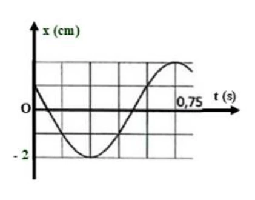
a) Biên độ dao động của vật là \(4\) cm.
b) Chu kì dao động của vật là \(0{,}75\) s.
c) Tại thời điểm \(t=0\), vật có li độ \(2\) cm và đi theo chiều dương.
d) Tại thời điểm \(t=0{,}75\) s, vật đi qua vị trí cân bằng theo chiều dương.
Đáp án và lời giải
Kết luận: a) Sai; b) Sai; c) Sai; d) Sai. Hướng dẫn giải:
- Từ trục tung, biên độ là \(A=2\) cm, không phải \(4\) cm.
- Trên trục thời gian, \(5\) ô ứng với \(0{,}75\) s nên mỗi ô là \(0{,}15\) s; một chu kì dài \(6\) ô, do đó \(T=0{,}9\) s.
- Tại \(t=0\), vật có \(x=2\) cm nhưng đồ thị đang đi xuống, nên vật chuyển động theo chiều âm.
- Tại \(t=0{,}75\) s, vật ở biên dương, không đi qua vị trí cân bằng.
Bài 119
Dao động của một vật là tổng hợp của hai dao động điều hòa cùng phương có li độ lần lượt là \(x_1\) và \(x_2\). Đồ thị dưới đây biểu diễn sự phụ thuộc của \(x_1\) và \(x_2\) theo thời gian \(t\). Xét các phát biểu:
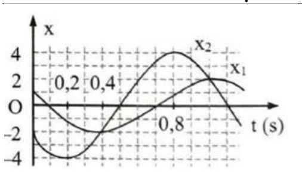
a) Tại thời điểm \(0{,}4\) s, hai dao động thành phần có cùng li độ.
b) Chu kì dao động là \(1{,}2\) s.
c) Tại thời điểm \(t=0\), pha dao động của \(x_2\) là \(\dfrac{\pi}{4}\) rad.
d) Dao động \(x_1\) nhanh pha hơn dao động \(x_2\) một góc \(\dfrac{2\pi}{3}\) rad.
Đáp án và lời giải
Kết luận: a) Đúng; b) Đúng; c) Sai; d) Sai. Hướng dẫn giải:
- Tại \(t=0{,}4\) s, hai đường đồ thị cắt nhau nên \(x_1=x_2\).
- \(8\) ô ngang ứng với \(0{,}8\) s, suy ra mỗi ô là \(0{,}1\) s. Một chu kì dài \(12\) ô nên \(T=1{,}2\) s.
- Với \(x_2\), tại \(t=0\) có \(x_2=-2\) cm, \(A_2=4\) cm và đồ thị đang đi xuống. Do đó \(\cos\varphi_2=-1/2\) và \(\sin\varphi_2>0\), suy ra \(\varphi_2=2\pi/3\), không phải \(\pi/4\).
- Độ lệch thời gian giữa hai dao động là \(\Delta t=0{,}2\) s. Vì \(T=1{,}2\) s,
Vì vậy \(x_1\) nhanh pha hơn \(x_2\) một góc \(\pi/3\), không phải \(2\pi/3\).